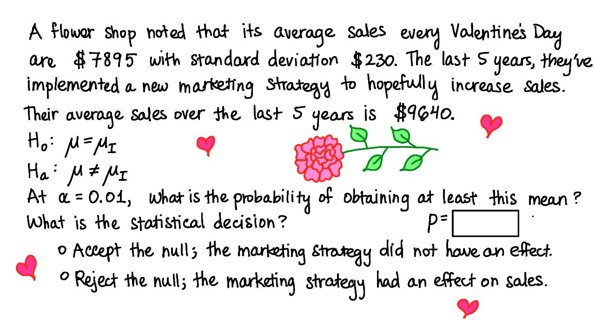

04. 13. 情人节
- 情人节
Start Quiz:

INSTRUCTOR NOTE:
一间花店发现，他们在情人节的销售额均值为 7895 美元，标准偏差为 230 美元。过去 5 年里，他们实施了一项新的营销策略，希望可以提高销售额。过去 5 年里在情人节的平均销售额为 9640 美元。
- 零假设 H0: µ = µi
- 对立假设 Ha: µ ≠ µi
α = 0.01 时， 均值不低于 9640 美元的概率是多少？（输入 p 值的答案，精确到小数点后四位或更多。）
你的统计学结论是什么？
- 接受零假设，新营销策略无效。
- 拒绝零假设，新营销策略提高了销售额。